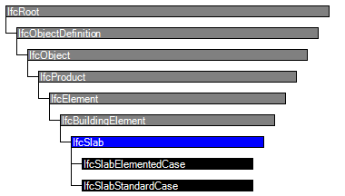
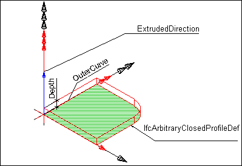
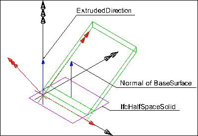

Natural language names
 | Decke / Dachfläche / Bodenplatte |
 | Slab |
 | Dalle |
| Decke / Dachfläche / Bodenplatte |
| Slab |
| Dalle |
| Item | SPF | XML | Change | Description | IFC2x3 to IFC4 |
|---|---|---|---|---|
| IfcSlab | ||||
| OwnerHistory | MODIFIED | Instantiation changed to OPTIONAL. |
A slab is a component of the construction that normally encloses a space vertically. The slab may provide the lower support (floor) or upper construction (roof slab) in any space in a building.
NOTE Definition according to ISO 6707-1
thick, flat or shaped component, usually larger than 300 mm square, used to form a covering or projecting from a building.
Only the core or constructional part of this construction is considered to be a slab. The upper finish (flooring, roofing) and the lower finish (ceiling, suspended ceiling) are considered to be coverings. A special type of slab is the landing, described as a floor section to which one or more stair flights or ramp flights connect.
NOTE There is a representation of slabs for structural analysis provided by a proper subtype of IfcStructuralMember being part of the IfcStructuralAnalysisModel.
NOTE An arbitrary planar element to which this semantic information is not applicable or irrelevant shall be modeled as IfcPlate.
A slab may have openings, such as floor openings, or recesses. They are defined by an IfcOpeningElement attached to the slab using the inverse relationship HasOpenings pointing to IfcRelVoidsElement.
There are three entities for slab occurrences:
HISTORY New entity in IFC2.0; it is a merger of the two previous entities IfcFloor, IfcRoofSlab, introduced in IFC1.0
| # | Attribute | Type | Cardinality | Description | C |
|---|---|---|---|---|---|
| 9 | PredefinedType | IfcSlabTypeEnum | [0:1] |
Predefined generic type for a slab that is specified in an enumeration. There may be a property set given specifically for the predefined types.
NOTE The PredefinedType shall only be used, if no IfcSlabType is assigned, providing its own IfcSlabType.PredefinedType. | X |
| Rule | Description |
|---|---|
| CorrectPredefinedType | Either the PredefinedType attribute is unset (e.g. because an IfcSlabType is associated), or the inherited attribute ObjectType shall be provided, if the PredefinedType is set to USERDEFINED. |
| CorrectTypeAssigned | Either there is no slab type object associated, i.e. the IsTypedBy inverse relationship is not provided, or the associated type object has to be of type IfcSlabType. |

| # | Attribute | Type | Cardinality | Description | C |
|---|---|---|---|---|---|
| IfcRoot | |||||
| 1 | GlobalId | IfcGloballyUniqueId | [1:1] | Assignment of a globally unique identifier within the entire software world. | X |
| 2 | OwnerHistory | IfcOwnerHistory | [0:1] |
Assignment of the information about the current ownership of that object, including owning actor, application, local identification and information captured about the recent changes of the object,
NOTE only the last modification in stored - either as addition, deletion or modification. | X |
| 3 | Name | IfcLabel | [0:1] | Optional name for use by the participating software systems or users. For some subtypes of IfcRoot the insertion of the Name attribute may be required. This would be enforced by a where rule. | X |
| 4 | Description | IfcText | [0:1] | Optional description, provided for exchanging informative comments. | X |
| IfcObjectDefinition | |||||
| HasAssignments | IfcRelAssigns @RelatedObjects | S[0:?] | Reference to the relationship objects, that assign (by an association relationship) other subtypes of IfcObject to this object instance. Examples are the association to products, processes, controls, resources or groups. | X | |
| Nests | IfcRelNests @RelatedObjects | S[0:1] | References to the decomposition relationship being a nesting. It determines that this object definition is a part within an ordered whole/part decomposition relationship. An object occurrence or type can only be part of a single decomposition (to allow hierarchical strutures only). | X | |
| IsNestedBy | IfcRelNests @RelatingObject | S[0:?] | References to the decomposition relationship being a nesting. It determines that this object definition is the whole within an ordered whole/part decomposition relationship. An object or object type can be nested by several other objects (occurrences or types). | X | |
| HasContext | IfcRelDeclares @RelatedDefinitions | S[0:1] | References to the context providing context information such as project unit or representation context. It should only be asserted for the uppermost non-spatial object. | X | |
| IsDecomposedBy | IfcRelAggregates @RelatingObject | S[0:?] | References to the decomposition relationship being an aggregation. It determines that this object definition is whole within an unordered whole/part decomposition relationship. An object definitions can be aggregated by several other objects (occurrences or parts). | X | |
| Decomposes | IfcRelAggregates @RelatedObjects | S[0:1] | References to the decomposition relationship being an aggregation. It determines that this object definition is a part within an unordered whole/part decomposition relationship. An object definitions can only be part of a single decomposition (to allow hierarchical strutures only). | X | |
| HasAssociations | IfcRelAssociates @RelatedObjects | S[0:?] | Reference to the relationship objects, that associates external references or other resource definitions to the object.. Examples are the association to library, documentation or classification. | X | |
| IfcObject | |||||
| 5 | ObjectType | IfcLabel | [0:1] |
The type denotes a particular type that indicates the object further. The use has to be established at the level of instantiable subtypes. In particular it holds the user defined type, if the enumeration of the attribute PredefinedType is set to USERDEFINED.
| X |
| IsDeclaredBy | IfcRelDefinesByObject @RelatedObjects | S[0:1] | Link to the relationship object pointing to the declaring object that provides the object definitions for this object occurrence. The declaring object has to be part of an object type decomposition. The associated IfcObject, or its subtypes, contains the specific information (as part of a type, or style, definition), that is common to all reflected instances of the declaring IfcObject, or its subtypes. | X | |
| Declares | IfcRelDefinesByObject @RelatingObject | S[0:?] | Link to the relationship object pointing to the reflected object(s) that receives the object definitions. The reflected object has to be part of an object occurrence decomposition. The associated IfcObject, or its subtypes, provides the specific information (as part of a type, or style, definition), that is common to all reflected instances of the declaring IfcObject, or its subtypes. | X | |
| IsTypedBy | IfcRelDefinesByType @RelatedObjects | S[0:1] | Set of relationships to the object type that provides the type definitions for this object occurrence. The then associated IfcTypeObject, or its subtypes, contains the specific information (or type, or style), that is common to all instances of IfcObject, or its subtypes, referring to the same type. | X | |
| IsDefinedBy | IfcRelDefinesByProperties @RelatedObjects | S[0:?] | Set of relationships to property set definitions attached to this object. Those statically or dynamically defined properties contain alphanumeric information content that further defines the object. | X | |
| IfcProduct | |||||
| 6 | ObjectPlacement | IfcObjectPlacement | [0:1] | Placement of the product in space, the placement can either be absolute (relative to the world coordinate system), relative (relative to the object placement of another product), or constraint (e.g. relative to grid axes). It is determined by the various subtypes of IfcObjectPlacement, which includes the axis placement information to determine the transformation for the object coordinate system. | X |
| 7 | Representation | IfcProductRepresentation | [0:1] | Reference to the representations of the product, being either a representation (IfcProductRepresentation) or as a special case a shape representations (IfcProductDefinitionShape). The product definition shape provides for multiple geometric representations of the shape property of the object within the same object coordinate system, defined by the object placement. | X |
| ReferencedBy | IfcRelAssignsToProduct @RelatingProduct | S[0:?] | Reference to the IfcRelAssignsToProduct relationship, by which other products, processes, controls, resources or actors (as subtypes of IfcObjectDefinition) can be related to this product. | X | |
| IfcElement | |||||
| 8 | Tag | IfcIdentifier | [0:1] | The tag (or label) identifier at the particular instance of a product, e.g. the serial number, or the position number. It is the identifier at the occurrence level. | X |
| FillsVoids | IfcRelFillsElement @RelatedBuildingElement | S[0:1] | Reference to the IfcRelFillsElement Relationship that puts the element as a filling into the opening created within another element. | X | |
| ConnectedTo | IfcRelConnectsElements @RelatingElement | S[0:?] | Reference to the element connection relationship. The relationship then refers to the other element to which this element is connected to. | X | |
| IsInterferedByElements | IfcRelInterferesElements @RelatedElement | S[0:?] | Reference to the interference relationship to indicate the element that is interfered. The relationship, if provided, indicates that this element has an interference with one or many other elements.
NOTE There is no indication of precedence between IsInterferedByElements and InterferesElements. | X | |
| InterferesElements | IfcRelInterferesElements @RelatingElement | S[0:?] | Reference to the interference relationship to indicate the element that interferes. The relationship, if provided, indicates that this element has an interference with one or many other elements.
NOTE There is no indication of precedence between IsInterferedByElements and InterferesElements. | X | |
| HasProjections | IfcRelProjectsElement @RelatingElement | S[0:?] | Projection relationship that adds a feature (using a Boolean union) to the IfcBuildingElement. | X | |
| ReferencedInStructures | IfcRelReferencedInSpatialStructure @RelatedElements | S[0:?] | Reference relationship to the spatial structure element, to which the element is additionally associated. This relationship may not be hierarchical, an element may be referenced by zero, one or many spatial structure elements. | X | |
| HasOpenings | IfcRelVoidsElement @RelatingBuildingElement | S[0:?] | Reference to the IfcRelVoidsElement relationship that creates an opening in an element. An element can incorporate zero-to-many openings. For each opening, that voids the element, a new relationship IfcRelVoidsElement is generated. | X | |
| IsConnectionRealization | IfcRelConnectsWithRealizingElements @RealizingElements | S[0:?] | Reference to the connection relationship with realizing element. The relationship, if provided, assigns this element as the realizing element to the connection, which provides the physical manifestation of the connection relationship. | X | |
| ProvidesBoundaries | IfcRelSpaceBoundary @RelatedBuildingElement | S[0:?] | Reference to space boundaries by virtue of the objectified relationship IfcRelSpaceBoundary. It defines the concept of an element bounding spaces. | X | |
| ConnectedFrom | IfcRelConnectsElements @RelatedElement | S[0:?] | Reference to the element connection relationship. The relationship then refers to the other element that is connected to this element. | X | |
| ContainedInStructure | IfcRelContainedInSpatialStructure @RelatedElements | S[0:1] | Containment relationship to the spatial structure element, to which the element is primarily associated. This containment relationship has to be hierachical, i.e. an element may only be assigned directly to zero or one spatial structure. | X | |
| HasCoverings | IfcRelCoversBldgElements @RelatingBuildingElement | S[0:?] | Reference to IfcCovering by virtue of the objectified relationship IfcRelCoversBldgElement. It defines the concept of an element having coverings associated. | X | |
| IfcBuildingElement | |||||
| IfcSlab | |||||
| 9 | PredefinedType | IfcSlabTypeEnum | [0:1] |
Predefined generic type for a slab that is specified in an enumeration. There may be a property set given specifically for the predefined types.
NOTE The PredefinedType shall only be used, if no IfcSlabType is assigned, providing its own IfcSlabType.PredefinedType. | X |
Object Typing
The Object Typing concept applies to this entity as shown in Table 163.
| ||
Table 163 — IfcSlab Object Typing |
Property Sets for Objects
The Property Sets for Objects concept applies to this entity as shown in Table 164.
| ||||||||||||||||||||||||||||||||||||||||||||||||||||||||||||||||||||||||||||||||||||||||||||||||||||||||||||||||||||||||||||||||||||||||||||||||||||||||||||||||||||||||||||||||||||||||||||||||||||||||||||||||||||||||||||||||||||||||||||||||||||||||||||||||||||||||||||||||||||||||||||||||||||||||||||||||||||||||||||||||||||||||||||||||||||||||||||||
Table 164 — IfcSlab Property Sets for Objects |
Quantity Sets
The Quantity Sets concept applies to this entity as shown in Table 165.
| ||
Table 165 — IfcSlab Quantity Sets |
Material Layer Set
The Material Layer Set concept applies to this entity.
The material of the IfcSlab is defined by IfcMaterialLayerSet, or as fallback by IfcMaterial, and it is attached either directly or at the IfcSlabType.
NOTE It is illegal to assign an IfcMaterialLayerSetUsage to an IfcSlab. Only the subtype IfcSlabStandardCase supports this concept.
Spatial Containment
The Spatial Containment concept applies to this entity as shown in Table 166.
| ||||||||
Table 166 — IfcSlab Spatial Containment |
The IfcSlab, as any subtype of IfcBuildingElement, may participate alternatively in one of the two different containment relationships:
Surface Geometry
The Surface Geometry concept applies to this entity.
NOTE The 'Surface' can be used to define a surfacic model of the building (e.g. for analytical purposes, or for reduced Level of Detail representation).
Body SweptSolid Geometry
The Body SweptSolid Geometry concept applies to this entity.
The following additional constraints apply to the swept solid representation:
Figure 232 illustrates a 'SweptSolid' geometric representation.
NOTE The following interpretation of dimension parameter applies for polygonal slabs (in ground floor view):
- IfcArbitraryClosedProfileDef.OuterCurve: closed bounded curve interpreted as area (or foot print) of the slab.
 |
Figure 232 — Slab body extrusion |
Body Clipping Geometry
The Body Clipping Geometry concept applies to this entity.
The following constraints apply to the 'Clipping' representation:
Figure 233 illustrates a 'Clipping' geometric representation with definition of a roof slab using advanced geometric representation. The profile is extruded non-perpendicular and the slab body is clipped at the eave.
 |
Figure 233 — Slab body clipping |
Element Voiding
The Element Voiding concept applies to this entity as shown in Table 167.
Table 167 — IfcSlab Element Voiding |
Product Assignment
The Product Assignment concept applies to this entity as shown in Table 168.
| ||||||
Table 168 — IfcSlab Product Assignment |
| # | Concept | Model View |
|---|---|---|
| IfcRoot | ||
| Software Identity | Common Use Definitions | |
| Revision Control | Common Use Definitions | |
| IfcObject | ||
| Object Occurrence Predefined Type | Common Use Definitions | |
| IfcElement | ||
| Product Local Placement | Common Use Definitions | |
| Box Geometry | Common Use Definitions | |
| FootPrint Geometry | Common Use Definitions | |
| Body SurfaceOrSolidModel Geometry | Common Use Definitions | |
| Body SurfaceModel Geometry | Common Use Definitions | |
| Body Tessellation Geometry | Common Use Definitions | |
| Body Brep Geometry | Common Use Definitions | |
| Body AdvancedBrep Geometry | Common Use Definitions | |
| Body CSG Geometry | Common Use Definitions | |
| Mapped Geometry | Common Use Definitions | |
| Mesh Geometry | Common Use Definitions | |
| IfcBuildingElement | ||
| Surface 3D Geometry | Common Use Definitions | |
| IfcSlab | ||
| Object Typing | Common Use Definitions | |
| Property Sets for Objects | Common Use Definitions | |
| Quantity Sets | Common Use Definitions | |
| Material Layer Set | Common Use Definitions | |
| Spatial Containment | Common Use Definitions | |
| Surface Geometry | Common Use Definitions | |
| Body SweptSolid Geometry | Common Use Definitions | |
| Body Clipping Geometry | Common Use Definitions | |
| Element Voiding | Common Use Definitions | |
| Product Assignment | Common Use Definitions | |
<xs:element name="IfcSlab" type="ifc:IfcSlab" substitutionGroup="ifc:IfcBuildingElement" nillable="true"/>
<xs:complexType name="IfcSlab">
<xs:complexContent>
<xs:extension base="ifc:IfcBuildingElement">
<xs:attribute name="PredefinedType" type="ifc:IfcSlabTypeEnum" use="optional"/>
</xs:extension>
</xs:complexContent>
</xs:complexType>
ENTITY IfcSlab
SUPERTYPE OF(ONEOF(IfcSlabElementedCase, IfcSlabStandardCase))
SUBTYPE OF (IfcBuildingElement);
PredefinedType : OPTIONAL IfcSlabTypeEnum;
WHERE
CorrectPredefinedType : NOT(EXISTS(PredefinedType)) OR
(PredefinedType <> IfcSlabTypeEnum.USERDEFINED) OR
((PredefinedType = IfcSlabTypeEnum.USERDEFINED) AND EXISTS (SELF\IfcObject.ObjectType));
CorrectTypeAssigned : (SIZEOF(IsTypedBy) = 0) OR
('IFCSHAREDBLDGELEMENTS.IFCSLABTYPE' IN TYPEOF(SELF\IfcObject.IsTypedBy[1].RelatingType));
END_ENTITY;
 Instance diagram
Instance diagram Link to this page
Link to this page